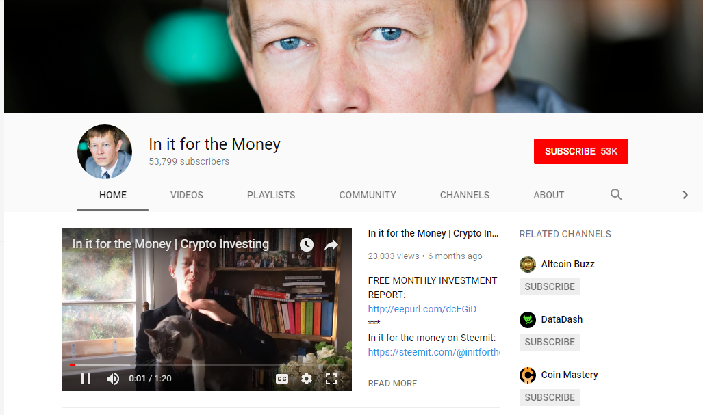

There is little doubt that Youtube is a pretty impressive place to visit if you are searching for some advice and useful information related to cryptocurrencies. After all, there are a whole host of ‘experts’ that have uploaded a wide array of videos covering a variety of subjects, so thee is always something rather interesting to find if you are willing to spend the time checking it out.
However, we want to make things a bit easier for you, so here are just some of the key people that we believe you should check out.

- In It For The Money.
This channel belongs to a Danish guy who just does not come across as being the usual kind of person you would follow on Youtube. However, do not allow the smart dressing to put you off because what he offers you is some pretty straightforward advice on a wide range of subjects related to digital currencies. Yes, he states that he has made some pretty impressive gains during his time as a trader, but it is the way in which he offers tips and advice that makes this a great channel.
- DJ Naydee.
Even though his channel is now about cryptocurrencies, this guy did start off as a DJ. Not only does he seek to make the entire thing as entertaining as possible, but he will always seek to explain things in terms that anybody will be able to understand. This in itself is pretty cool simply because he does make life so much easier and it will generally lead to you feeling as if you are in a better position to make the correct decisions with your own investments.
- The Cryptoniac.
The main focus of this channel is in checking out different ICO options, and they follow a tried and tested formula and structure with each video. This does make it easier for you to work out which ICO you should follow next, and he is not afraid to give his own personal opinions as to whether or not this will ultimately be successful which is like a breath of fresh air when others simply take the company line.
- The Modern Investor.
This guy is pretty prolific when it comes to the videos that he is able to produce and if you are looking for a channel that is going to dig deep into the news that surrounds the industry, then this could very well be the correct place for you. Throughout his videos, he covers each and every aspect of the crypto world from coins to mining and everything in between . However, he does so in a simplistic manner meaning each and every video can be enjoyed by everyone even those that are relatively new to this entire industry.
- Data Dash.
This channel is one of the most popular cryptocurrency channels that exists on Youtube, and it is pretty easy to see why as soon as you start to check out the different videos that appear on their channel. With news, interviews, tips and guidance, the owner of the channel is actually very well respected in the industry meaning you can really trust the advice and information that he gives. Also, he avoids making things as complex as they can sometimes be which is always a bonus.
- Young and Investing.
Don’t allow the name to fool you or put you off checking out this channel as that would be a huge mistake on your part. His videos consist of looking at ICOs, news, and he is also not afraid to refer to things as being a scam if he is not that happy with what he is seeing. This is something that he has done before with very positive results, so you should find no problem in believing everything that he has to say even if you are not completely convinced in the process.
- BTC Business Consult.
This guy called Andreas is not as well known as some of the other people on Youtube in this industry, but that doesn’t mean that he is unable to provide some amazing pieces of information because that is certainly not the case. His main focus is on those coins that offer dividends or payouts which is a niche market, but one that is still important and is worth checking out. The cool thing is that he goes into some detail with the various payouts so you know where you stand at all times.
- Hyper Change TV.
This channel covers not only the world of cryptocurrency but also the stock market in general although the videos that they produce on digital currency and the blockchain are always of a high standard. Presented by a guy called Gali, he is certainly enthusiastic about his topics and this comes across loud and clear in each video. He prefers to look at the long-term game with the various investments so if you are wanting advice on how to make fast money, then this is not the guy for you.
- Crypto Gurus.
This channel is fronted by two English guys and they are making a name for themselves for offering some of the most in-depth reviews of the various ICOs that are hitting the scene today. They will also spend a considerable amount of time studying the economics of various tokens providing you with a more stable picture of what to do next. However, don’t worry as they keep it simple even though they are dealing with complex issues.
- The Crypto Lark.
The Crypto Lark is an American who currently resides in New Zealand, and he is viewed by many as being the best on Youtube for cryptocurrency news and reviews. His videos are quite laid-back even though he has a tendency to go in deep with his reviews and analysis but by the end of it all he does lay it all out on the line as to why a certain coin or ICO is good or bad.